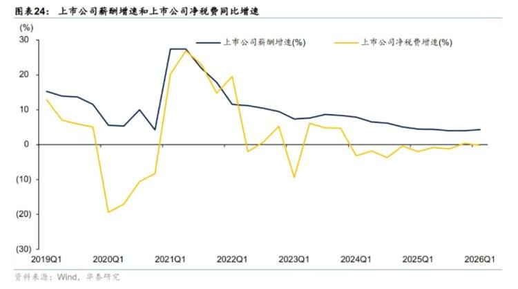
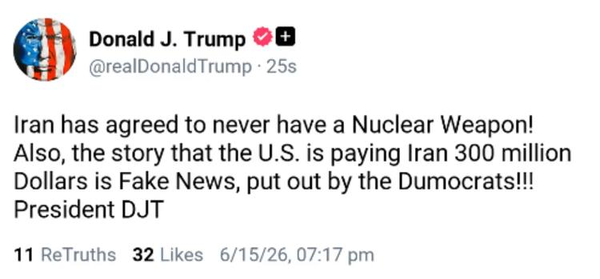
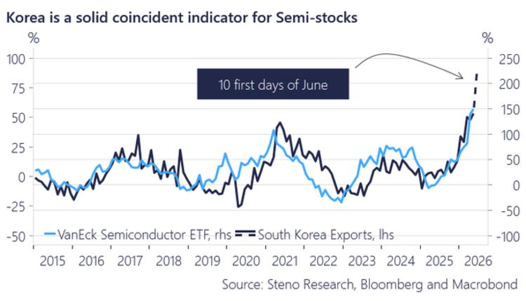
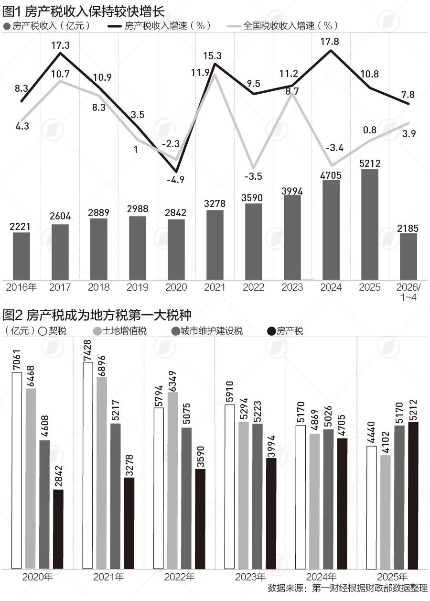
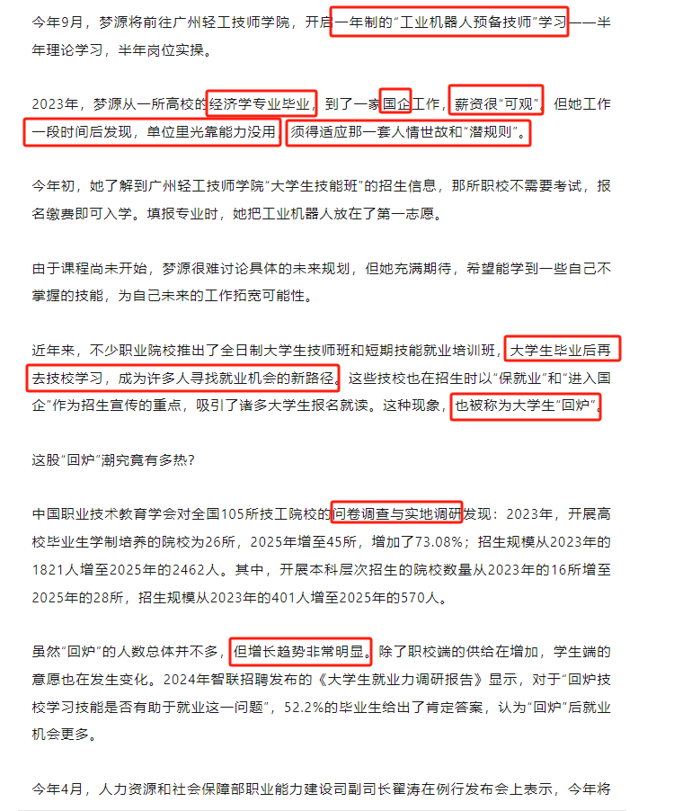
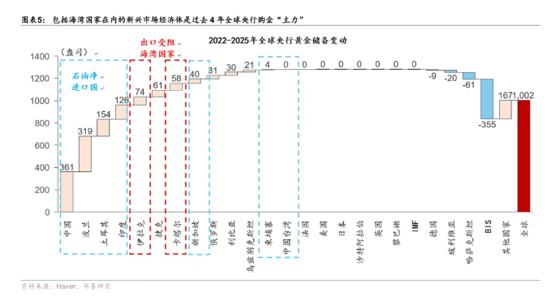
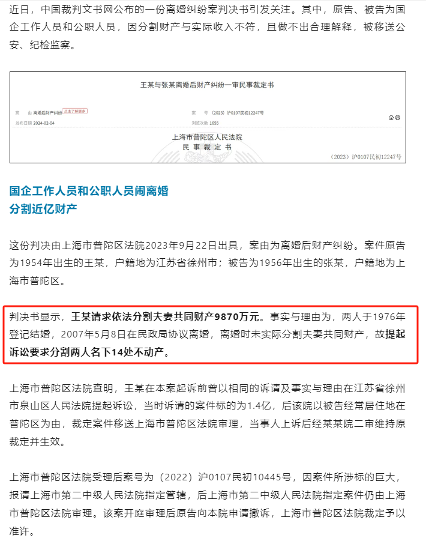

2026 · 06 · 17
下午档（13:50–14:21，帖10–13）——全球货币与能源秩序重排
今天 13 帖可分成两条主线、两个时段：
每日帖子深度解读 · 宏观财经的体系化阅读
今天 13 帖可分成两条主线、两个时段：
今天 Jason 集中转发了一批券商与外媒研报，主题高度聚焦在"中国 5 月经济数据偏弱"这条主线上：华创、花旗、申万、兴业、华泰从不同角度指向同一个结论——增长动能在二季度放缓（GDP 约 4.4%），而且是"价格在涨、

今天的绝对主线只有一个词：美伊缓和。市场在交易"特朗普想要协议、伊朗同意不拥核、霍尔木兹海峡重新开放"这条线索——结果是油价下跌、美股上涨（道指再创历史新高）、黄金回调、美联储加息押注降温。

今天 Jason 的 8 篇贴可以串成两条主线。

今天 Jason 一口气发了 8 条，主线非常清楚，可以分成三组来看：

今天 Jason 的帖子集中在一条主线上：通胀重新抬头，但地缘风险却在缓和。

今天的主线非常密集：中国 5 月通胀数据是绝对核心——PPI 同比 +3.9% 超预期，但属于"上游涨、下游传不动"的成本冲击型通胀（巴克莱、长江、广发三家解读）；美国 5 月 CPI 则给出相反信号——核心商品一年多来首次环比下降，

今天 Jason 一口气转发了 17 条机构观点，可以归成 6 条主线：

今天 Jason 一口气发了 11 条，集中在三条主线：
今天 Jason 的信息量集中在四条主线：第一，"去美元化"的黄金叙事拿到了里程碑数据——黄金占全球央行外储 27%、30 年来首超美债（日经/ECB），WGC 显示央行 4 月重新增持，瑞银则提醒这个趋势从 2008 年就开始了，

今天 Jason 连发 10 帖，可以分成两条主线。
6 月 1 日 Jason 一口气转了 10 条，主线非常集中，可以串成一个故事：